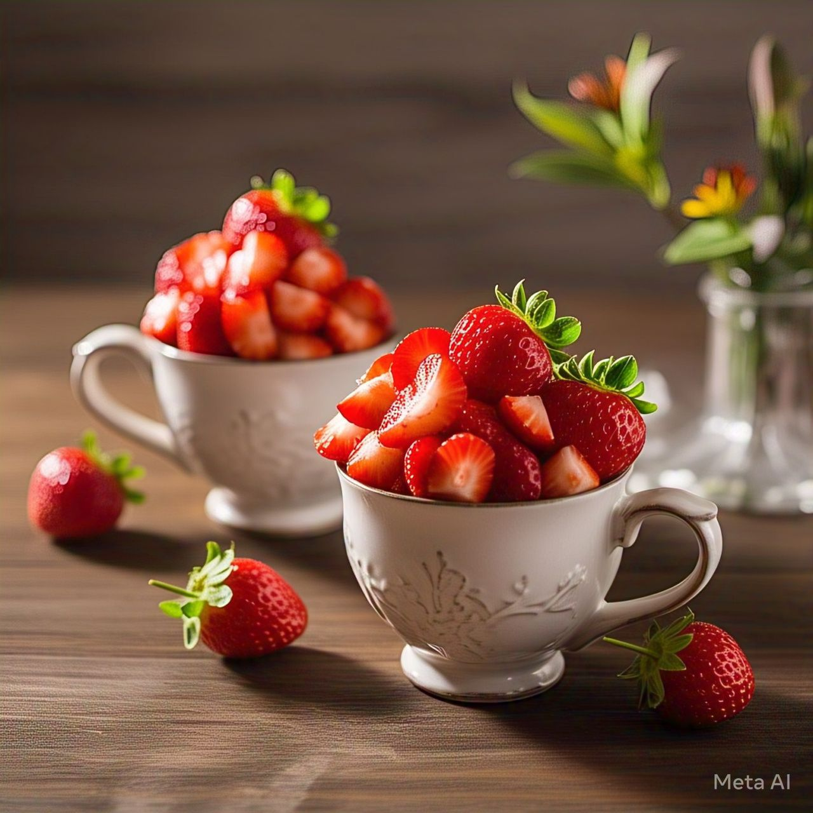

Buscar
Voltar para Receitas
❮
❯
Sorvete de Morango Caseiro
Tempo de preparo:
6 Horas
Ingredientes:
2 xícaras (chá) de morangos frescos lavados e picados
1 lata (395g) de leite condensado
1 caixa (200g) de creme de leite
Suco de meio limão (opcional, realça o sabor)
1 colher (chá) de essência de baunilha (opcional)
Modo de Preparo
No liquidificador, bata os morangos com o leite condensado, o creme de leite, o suco de limão e a baunilha até obter um creme homogêneo.
Despeje a mistura em um recipiente e leve ao freezer por 2 horas.
Retire do freezer e bata a mistura na batedeira para quebrar os cristais de gelo. Isso deixará o sorvete mais cremoso.
Leve ao freezer por mais 4 horas até firmar.
Retire alguns minutos antes de servir para que fique mais cremoso.
Dicas adicionais:
Se quiser um sorvete ainda mais cremoso, bata a mistura mais uma vez antes da etapa final de congelamento.
Pode adicionar pedacinhos de morango para deixar o sorvete mais rústico.
Substitua o leite condensado por iogurte natural e mel para uma versão mais saudável.


 1 lata (395g) de leite condensado
1 lata (395g) de leite condensado 1 caixa (200g) de creme de leite
1 caixa (200g) de creme de leite Suco de meio limão (opcional, realça o sabor)
Suco de meio limão (opcional, realça o sabor) 1 colher (chá) de essência de baunilha (opcional)
1 colher (chá) de essência de baunilha (opcional)